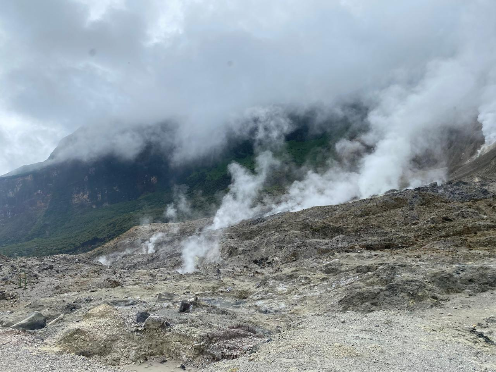
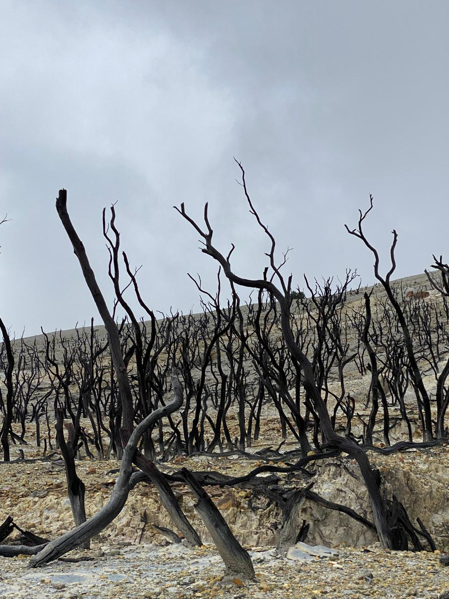
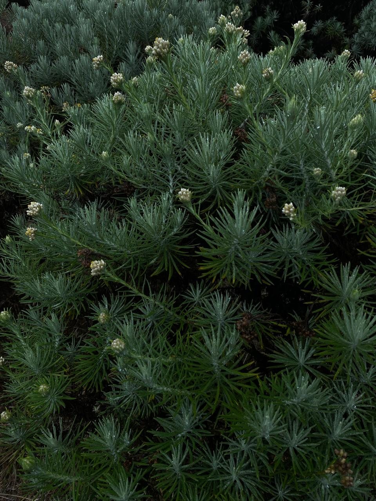
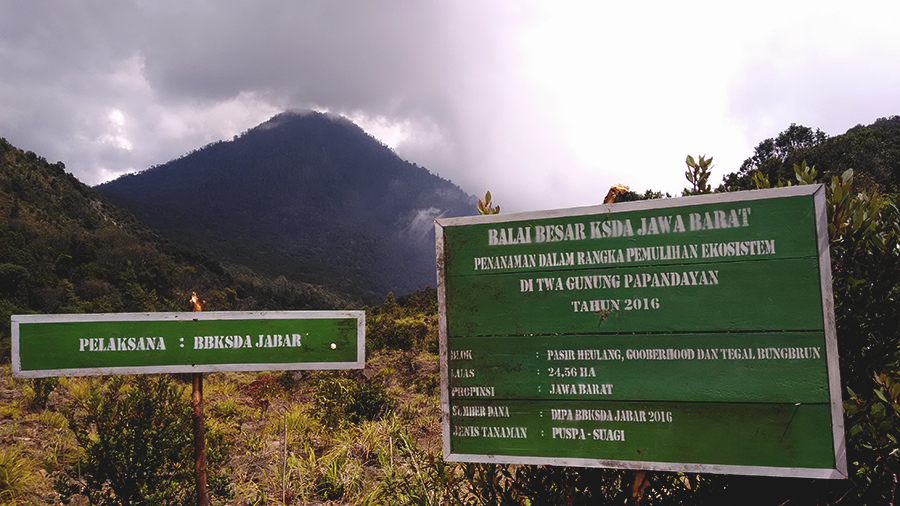

Gunung Papandayan merupakan salah satu gunung berapi yang terkenal di Jawa Barat, Indonesia. Gunung ini terletak di Kabupaten Garut dan memiliki ketinggian sekitar 2.665 meter di atas permukaan laut. Gunung Papandayan menjadi salah satu tempat wisata alam yang banyak dikunjungi karena memiliki pemandangan yang indah, udara yang sejuk, serta berbagai keunikan alam. Selain menjadi tempat wisata, Gunung Papandayan juga memiliki nilai penting dari segi geologi karena masih termasuk gunung berapi yang aktif.


Salah satu daya tarik utama Gunung Papandayan adalah kawahnya. Kawasan kawah Papandayan memiliki pemandangan yang khas dengan tanah berwarna putih keabu-abuan serta kepulan asap dan uap dari aktivitas vulkanik. Pengunjung dapat melihat beberapa kawah yang masih mengeluarkan gas belerang. Bau belerang yang cukup kuat dapat tercium di sekitar kawasan tersebut. Meskipun demikian, kawasan kawah tetap menjadi salah satu bagian yang paling menarik bagi wisatawan karena menunjukkan secara langsung aktivitas gunung berapi.



Selain kawah, Gunung Papandayan juga memiliki berbagai kawasan alam yang menarik. Salah satunya adalah Hutan Mati, yaitu kawasan yang dipenuhi oleh batang-batang pohon yang telah mati akibat aktivitas vulkanik pada masa lalu. Batang pohon yang berwarna gelap dan kering menciptakan pemandangan yang unik. Tempat ini sering menjadi lokasi untuk menikmati pemandangan dan mengambil foto. Ada pula Tegal Alun, sebuah padang luas yang terkenal dengan hamparan bunga edelweiss. Bunga edelweiss dikenal sebagai salah satu tumbuhan khas daerah pegunungan dan mampu hidup di lingkungan dengan kondisi yang cukup ekstrem.
Gunung Papandayan juga memiliki sejarah letusan yang cukup penting. Salah satu letusan terbesar terjadi pada tahun 1772. Letusan tersebut menyebabkan perubahan besar pada kawasan gunung dan menimbulkan dampak bagi masyarakat di sekitarnya. Aktivitas vulkanik Gunung Papandayan masih terus dipantau hingga sekarang. Oleh karena itu, masyarakat dan wisatawan perlu mengikuti aturan keselamatan serta memperhatikan informasi dari pihak yang berwenang ketika mengunjungi kawasan gunung.


Keindahan Gunung Papandayan tidak hanya memberikan manfaat bagi wisatawan, tetapi juga bagi masyarakat sekitar. Sektor pariwisata dapat membantu membuka berbagai peluang pekerjaan, seperti menjadi pemandu, pedagang, pengelola penginapan, maupun penyedia jasa lainnya. Dengan adanya wisatawan yang datang, perekonomian masyarakat di sekitar kawasan gunung dapat berkembang.


Namun, keindahan Gunung Papandayan juga harus dijaga bersama. Wisatawan sebaiknya tidak membuang sampah sembarangan, merusak tumbuhan, atau mengambil tanaman yang dilindungi. Kebersihan dan kelestarian alam sangat penting agar Gunung Papandayan tetap dapat dinikmati oleh generasi berikutnya. Pengunjung juga perlu mematuhi jalur yang telah ditentukan dan tidak memasuki kawasan yang berbahaya.
Satu Gunung, Banyak Cerita